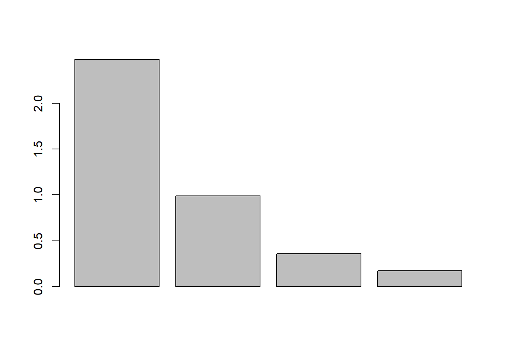
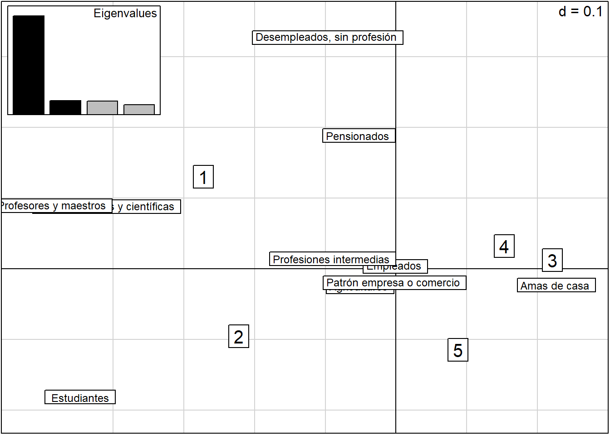
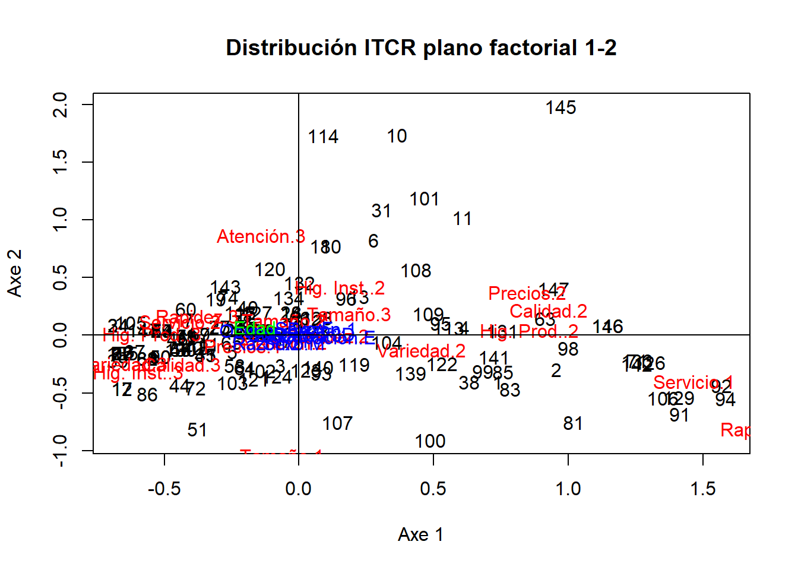
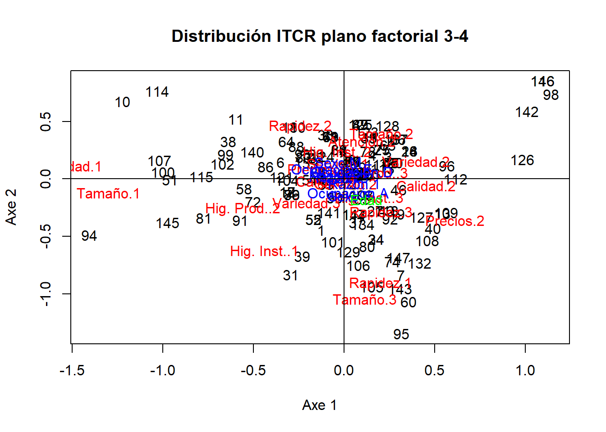

knitr::opts_chunk$set(warning =FALSE, message =FALSE)library(tidyverse) # To manipulate data, and other things
── Attaching core tidyverse packages ──────────────────────── tidyverse 2.0.0 ──
✔ dplyr 1.1.2 ✔ readr 2.1.4
✔ forcats 1.0.0 ✔ stringr 1.5.0
✔ ggplot2 3.4.2 ✔ tibble 3.2.1
✔ lubridate 1.9.2 ✔ tidyr 1.3.0
✔ purrr 1.0.1
── Conflicts ────────────────────────────────────────── tidyverse_conflicts() ──
✖ dplyr::filter() masks stats::filter()
✖ dplyr::lag() masks stats::lag()
ℹ Use the conflicted package (<http://conflicted.r-lib.org/>) to force all conflicts to become errors
library(ggforce) # To use ggcirclelibrary(openxlsx) # To manipulate Excellibrary(kableExtra) # To make beatiful tables
Attaching package: 'kableExtra'
The following object is masked from 'package:dplyr':
group_rows
library(ade4)tryCatch( {# Directorio donde se ubica el qmd directory <-dirname(rstudioapi::getSourceEditorContext()$path)setwd(directory) # Establecer el directorio del archivo como la raiz },error =function(e) {message("")print("") })
[1] ""
Análisis de componentes principales
data(USArrests)# We make the pcaacp_res <-dudi.pca(USArrests, scannf =FALSE, nf =3)# We check that type of the object acp_resis.dudi(acp_res)
[1] TRUE
# We check the rank of the matrixacp_res$rank
[1] 4
# We check the number of factorsacp_res$nf
[1] 3
# We check the eigen valuesacp_res$eig
[1] 2.4802416 0.9897652 0.3565632 0.1734301
# We do a bar plotbarplot(acp_res$eig)

# We check the table centered, and also standarizedacp_res$tab
# We make a afcz <-dudi.coa(df = housetasks, scannf = F, nf =3)# We get the eigen valuesround(z$eig, 2)
[1] 0.54 0.45 0.13
# Inertia explained by each eigen valueround(z$eig /sum(z$eig) *100, 2)
[1] 48.69 39.91 11.40
# We make the plot of the eigen values to check the inertia, and the inflection pointinercia <- z$eig /sum(z$eig) *100# Bar plotggplot(, aes(x =c("1", "2", "3"), y = inercia)) +geom_bar(stat ="identity") +labs(x ="Autovalor", y ="% de inercia") +theme_minimal() +ggtitle("Valor propios en %")
# Factorial planescatter(z, method =1, sub ="Tareas en el Hogar", posieig ="none")
NULL
# Second way to make factorial planeplot(z$li[, 1], z$li[, 2], type ="n", xlab ="Axe 1", ylab ="Axe 2", xlim =c(-1.2, 1.6))text(z$li[, 1], z$li[, 2], label =row.names(housetasks))text(z$co[, 1], z$co[, 2], label =colnames(housetasks), col ="red")title("Distribuci´on de Tareas en el Hogar")abline(h =0, v =0)
# We read the dataprofesiones <-read.xlsx("Ejercicios-Cap4.xlsx", 1)# We make the afcrownames(profesiones) <- profesiones[, 1]profesiones <- profesiones[, -1]profesiones_coa <-dudi.coa(df = profesiones, scannf = F, nf =4)scatter(profesiones_coa)

Se puede observar que las amas de casa claramente se oponene a los profesores y maestros, así como los profes. liberalres y científicas teniéndose que los maestros aportan en su gran mayoría a la respuesta de que está en total desacuerdo de con el “FMI ayude a resolver la crisis”. Los otros que se oponen a estos últimos respecto al segundo eje y estos aportan en su gran mayoría con estar no tan de acuerdo. Además, en su gran mayoría las amas de casa aportan a la respuesta de podría estar de acuerdo. Las profesiones intermedias, empleados, patrón empresa o comercio, y agricultores no se ven tan bien representados en este plano.
Se puede observar como los agricultores y los patrones de empresa o comercio se encuentran del mismo lado en el plano factorial 3-4. Vamos a graficar los perfiles fila mediante un barplot para ver si esto es cierto
# We estimate the row profilesrow_profiles_profesiones <- profesiones /apply(profesiones, 1, sum)row_profiles_profesiones$profesion <-rownames(row_profiles_profesiones)row_profiles_profesiones <- row_profiles_profesiones %>%gather(key ="Respuesta", value ="Valor", 1:5)row_profiles_profesiones %>%filter(profesion %in%c("Agricultures ", "Patrón empresa o comercio ")) %>%ggplot(aes(x = Respuesta, y = Valor, fill = profesion)) +geom_bar(stat ="identity") +facet_wrap(. ~ profesion) +theme_minimal() +labs(fill ="Profesión", x ="Respuesta", y ="Valor")
Se puede observar que de cierta forma sí tienen un comportamiento similar tanto los agricultores omo los patrones de empresas o comercios. Tal y como lo proponía el plano factorial 3-4.
Se encuentra que sobre esta tabla de datos se puede realizar un AFC ya que a pesar de que fue ideado para describir la relación de dos variables cualitativas a través de tablas de contingencias el único requisito necesario es que las entradas de la tabla no sean negativas y que la suma de columnas y filas no se anule.
En este caso se puede encontrar un comportamiento similar para los años, más no exactamente igual en términos de correlación. Ahora en cuanto a los productos se encuentra que en el ACP la mayoría de los cultivos se encuentran cercanos, situación que no sucede en el AFC que presentan un comportamiento de mayor dispersión.
Análisis de correspondencias múltiples
# We load the datadata(ours)# We show the tableours
# ACM resultsours_acm <-dudi.acm(ours, scann =FALSE, nf =3)# We check the eigen valuesapply(ours_acm$cr, 2, mean)
RS1 RS2 RS3
0.4458097 0.3228212 0.2500239
ours_acm$eig[1:ours_acm$nf]
[1] 0.4458097 0.3228212 0.2500239
# Plot of eigen valuesinercia <- ours_acm$eig /sum(ours_acm$eig) *100barplot(inercia, ylab ="% de inercia", names.arg =round(inercia, 2))title("Valor propios en %")
# Factorial plane representationplot(ours_acm$li[, 1], ours_acm$li[, 2], type ="n", xlab ="Axe 1", ylab ="Axe 2", xlim =c(-1.2, 1.6))text(ours_acm$li[, 1], ours_acm$li[, 2], label =row.names(ours))text(ours_acm$co[, 1], ours_acm$co[, 2], label =colnames(our_disyuntivo), col ="red")title("Distribución de 38 Osos")abline(h =0, v =0)
# Main plane with intensitiess.value(ours_acm$li, ours_acm$li[, 3])
barplot(inercia, ylab ="% de inercia", names.arg =round(inercia, 2))title("Valor propios en %")
Si se pone como regla general que se tenga una inercia mayor a 75% entonces se pueden conservar los primeros 5 ejes. Además, se tiene que los que superan 100/12 = 8.3333333 en inercia, entonces se conservaría igualmente hasta el quinto.
En este caso se agregó un poco de ruido ya que algunas razas se encontraban justamente por encima de las otras. Se puede observar que los chihuha y pekinés son colocados de forma cercana de tal forma que estos se encuentran principalmente caracterizados por ser livianos, lkentos y pequeños a ellos se contraponen los perros más grandes como es el Rottweiler por ejemplo que tiene talla velocidad y talla mayor. Se puede observar que muy pocos son los perros que son caracterizados principalmente por agresividad 1, inteligencia 2 y afecto 3.
Ahora si se grafica la variable suplementaria función se tiene lo siguiente
funcion_suplementaria <-acm.disjonctif(perros %>%select(Func))coord_funcion <-supcol(x = perros_acm, Xsup = funcion_suplementaria)plot(perros_acm$li[, 1], perros_acm$li[, 2], type ="n", xlab ="Axe 1", ylab ="Axe 2", xlim =c(-1.2, 1.6))text(jitter(perros_acm$li[, 1], amount =0.1), jitter(perros_acm$li[, 2], amount =0.1), label =row.names(perros))# text((perros_acm$li[, 1]), (perros_acm$li[, 2]), label = row.names(perros))text((perros_acm$co[, 1]), (perros_acm$co[, 2]), label =colnames(perros_disyuntivo), col ="red")text((coord_funcion$cosup[, 1]), (coord_funcion$cosup[, 1]), label =colnames(funcion_suplementaria), col ="blue")title("Distribución de 27 razas de perros, primer plano factorial")abline(h =0, v =0)
Se puede observar en este caso que compañía y utilidad se contraponen, sin embargo, se puede observar que caza no se ve tan bien reflejada en este plano. Además, se puede obsevar que los que más aportan a utilidad son los terranova, dogo alemán y San Bernardo. Mientras que en el caso de compañía en el mismo cuadrante se encuentran algunos muy alejados. Ahora si se grafica el tercer eje con el cuarto eje se obtiene lo siguiente
plot(perros_acm$li[, 3], perros_acm$li[, 4], type ="n", xlab ="Axe 1", ylab ="Axe 2", xlim =c(-1.2, 1.6))text(jitter(perros_acm$li[, 3], amount =0.1), jitter(perros_acm$li[, 4], amount =0.1), label =row.names(perros))# text((perros_acm$li[, 1]), (perros_acm$li[, 2]), label = row.names(perros))text((perros_acm$co[, 3]), (perros_acm$co[, 4]), label =colnames(perros_disyuntivo), col ="red")text((coord_funcion$cosup[, 3]), (coord_funcion$cosup[, 4]), label =colnames(funcion_suplementaria), col ="blue")title("Distribución de 27 razas de perros, plano factorial 2-3")abline(h =0, v =0)
En este caso se puede ver más claramente la función de utilidad, que se puede observar caza se contrapone a utilidad teniendo que caza se ve mayoritariamente representado por el cuarto eje. Además, se encuentra que el que más le aporta en este caso a la posición son los Setter, perros los cuales realmente tienen como utilidad caza, lo cual termina siendo interesante ya que esta variable no fue incluida inicialmente en el ajuste del ACM.
# We read the datalibrary(readxl)df_itcr <-read_excel("./ComedorITCR-datos.xls")[, -1]# Disjonctif code of itcr table first 9 columnsitcr_disyuntivo <-acm.disjonctif(as.data.frame(df_itcr %>%select(1:9)))itcr_acm <-dudi.acm(df =as.data.frame(df_itcr %>%select(c(1:9))) %>%mutate(across(where(is.numeric), as.factor)), scann =FALSE, nf =5)# We are going to get the supplementart vary variable of disjointif code for qualitative# variablescolnames(df_itcr)
disyuntivo_suplementarias <-acm.disjonctif(as.data.frame(df_itcr %>%select(Razón, Sexo, Ocupación)))coord_suplementarias <-supcol(x = itcr_acm, Xsup = disyuntivo_suplementarias)edad_sup <-data.frame((df_itcr$Edad -mean(df_itcr$Edad)) /sd(df_itcr$Edad))v_h <-supcol(x = itcr_acm, Xsup = edad_sup)coord_vh_continua <- v_h$cosup # / nrow(itcr_disyuntivo)# We plot the variables, and the supplementary variablesplot(itcr_acm$li[, 1], itcr_acm$li[, 2], type ="n", xlab ="Axe 1", ylab ="Axe 2")text(itcr_acm$li[, 1], itcr_acm$li[, 2], label =row.names(df_itcr))text(itcr_acm$co[, 1], itcr_acm$co[, 2], label =colnames(itcr_disyuntivo), col ="red")text(coord_suplementarias$cosup[, 1], coord_suplementarias$cosup[, 2], label =colnames(disyuntivo_suplementarias), col ="blue")text(coord_vh_continua[1], coord_vh_continua[2], label ="Edad", col ="green")title("Distribución ITCR plano factorial 1-2")abline(h =0, v =0)

Se puede observar que en este la variable de edad no se ve la mejor forma representada. Se contraponen servicio 1 a rapidez 3, servicio 2 y tamaño 2. Además, se observar que los individuos se muestran realmente distribuidos a los largo de todos los ejes. Las variables suplementarias no se ven representadas de las mejor forma en este plano y sucede lo mismo que con edad.
# We plot the variables, and the supplementary variables in factorial plane 3-4plot(itcr_acm$li[, 3], itcr_acm$li[, 4], type ="n", xlab ="Axe 1", ylab ="Axe 2")text(itcr_acm$li[, 3], itcr_acm$li[, 4], label =row.names(df_itcr))text(itcr_acm$co[, 3], itcr_acm$co[, 4], label =colnames(itcr_disyuntivo), col ="red")text(coord_suplementarias$cosup[, 3], coord_suplementarias$cosup[, 4], label =colnames(disyuntivo_suplementarias), col ="blue")text(coord_vh_continua[3], coord_vh_continua[4], label ="Edad", col ="green")title("Distribución ITCR plano factorial 3-4")abline(h =0, v =0)

En este segundo plano se encuentra que en el plano factorial 3-4 se ven mejo representadas las variables suplementarias.